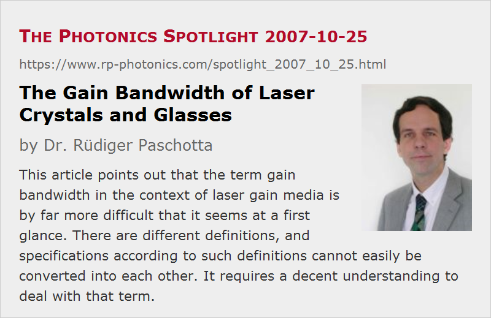

The Gain Bandwidth of Laser Crystals and Glasses
Posted on 2007-10-25 as a part of the Photonics Spotlight (available as e-mail newsletter!)
Permanent link: https://www.rp-photonics.com/spotlight_2007_10_25.html
Author: Dr. Rüdiger Paschotta, RP Photonics Consulting GmbH
Abstract: This article points out that the term gain bandwidth in the context of laser gain media is by far more difficult that it seems at a first glance. There are different definitions, and specifications according to such definitions cannot easily be converted into each other. It requires a decent understanding to deal with that term.

Ref.: encyclopedia article on gain bandwidth
At a first glance, one might really not expect any difficulties with the term gain bandwidth: isn't it simply the width of the frequency or wavelength region where some laser medium provides gain? Well, basically it is, only I suggest to drop the word “simply”.
At the heart of most of the confusion in the literature is the fact that a gain spectrum is hardly ever shaped like a rectangle, with a constant gain within some bandwidth, and no gain outside. This aspect alone might not look frightening; in optics, we are very much used to such smooth distributions and are familiar with appropriate definitions e.g. for a beam radius or a pulse duration. One might expect that we only have to agree on some percentage of the peak gain and simply measure the gain bandwidth as the difference of the two frequencies or wavelengths where the gain has dropped to that level. However, additional complications arise:
- Gain can be quantified in different ways, e.g. as an amplification factor, or with a logarithmic gain coefficient, e.g. in decibels. Of course, we can simply transform e.g. a 50% criterion (see above) into the criterion of −3 dB. But sometimes people use something like a 50% criterion applied to the logarithmic gain, then of course arriving at completely different results. (Take a 40-dB fiber amplifier: the bandwidth based on the −20 dB points is obviously quite a bit broader than that based on a −3 dB criterion.)
- A key question is whether the gain bandwidth should depend on the magnitude of the peak gain. It shouldn't, of course, if we want to specify a certain gain bandwidth for a certain crystal or glass material. On the other hand, what is of interest is often the amount of gain narrowing, e.g. in a high-gain amplifier or in a mode-locked laser, and this does depend on the peak gain. If you use the −3 dB criterion as above, this will of course be of the latter kind: the higher the peak gain, the narrower the −3 dB bandwidth.
- In many cases, what is of interest is not really the width of the frequency range with gain, but rather the “curvature” of the gain spectrum near its peak. This is what determines e.g. gain narrowing in a mode-locked laser. Obviously, the relation between such a figure and some conventional bandwidth specification depends on the shape of the gain spectrum, and the peak gain matters as well: for a given crystal material, little gain does little gain narrowing.
A reader of my article on the term gain bandwidth once wrote in his feedback that apparently it takes a physicist to make things so complicated. Well, my view is somewhat different: these things are rather complicated by their nature, and it takes a physicist to clarify the situation. Quite obviously, it doesn't help to keep things simple by ignoring all these pitfalls and naively dealing with published specifications. This article should have convincingly shown that when dealing with a term like “gain bandwidth”, one needs all the following:
- the understanding of the basic issues,
- the familiarity with common specifications and their pitfalls,
- a deep understanding of how a limited gain bandwidth influences the performance of a device.
Don't forget the latter – in the end, we should be able to apply that knowledge in practice. As an example, it is a both nontrivial and very important question whether the pulse duration achieved with a particular mode-locked laser is limited by the gain bandwidth or by something else, such as optical nonlinearities. In the latter case, it can be a great waste of time to experiment with more broadband gain media in an attempt to get shorter pulses.
This article is a posting of the Photonics Spotlight, authored by Dr. Rüdiger Paschotta. You may link to this page and cite it, because its location is permanent. See also the RP Photonics Encyclopedia.
Note that you can also receive the articles in the form of a newsletter or with an RSS feed.
Questions and Comments from Users
Here you can submit questions and comments. As far as they get accepted by the author, they will appear above this paragraph together with the author’s answer. The author will decide on acceptance based on certain criteria. Essentially, the issue must be of sufficiently broad interest.
Please do not enter personal data here; we would otherwise delete it soon. (See also our privacy declaration.) If you wish to receive personal feedback or consultancy from the author, please contact him e.g. via e-mail.
By submitting the information, you give your consent to the potential publication of your inputs on our website according to our rules. (If you later retract your consent, we will delete those inputs.) As your inputs are first reviewed by the author, they may be published with some delay.
|  |
If you like this page, please share the link with your friends and colleagues, e.g. via social media:
These sharing buttons are implemented in a privacy-friendly way!